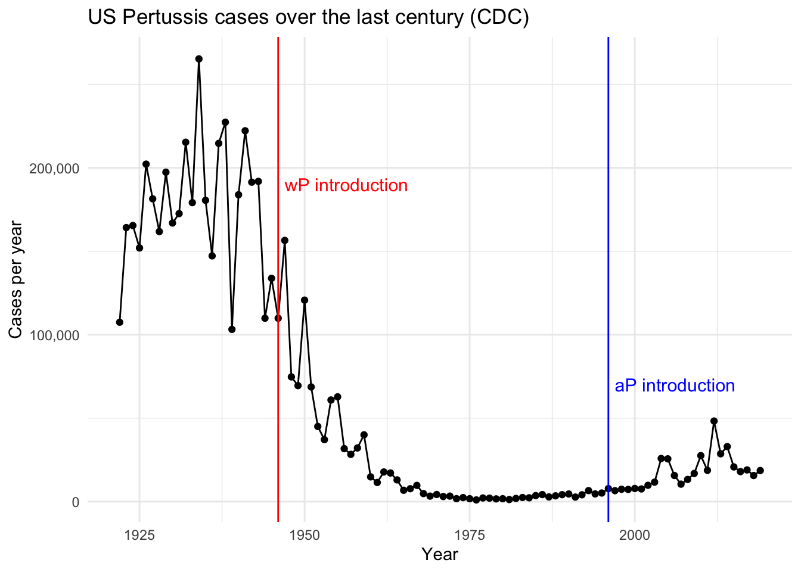
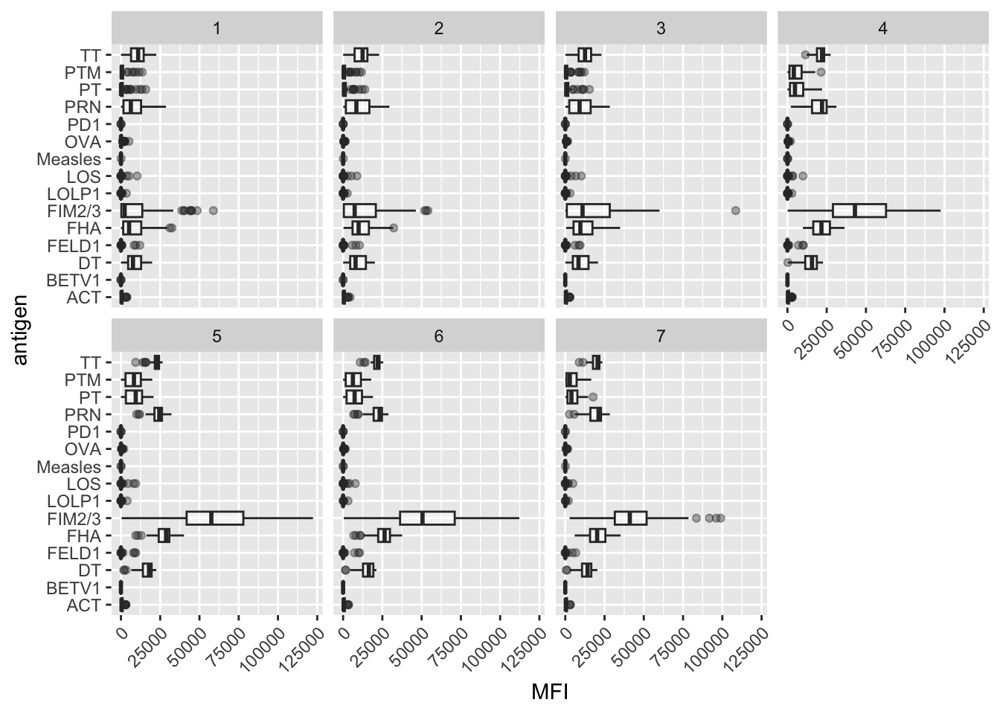
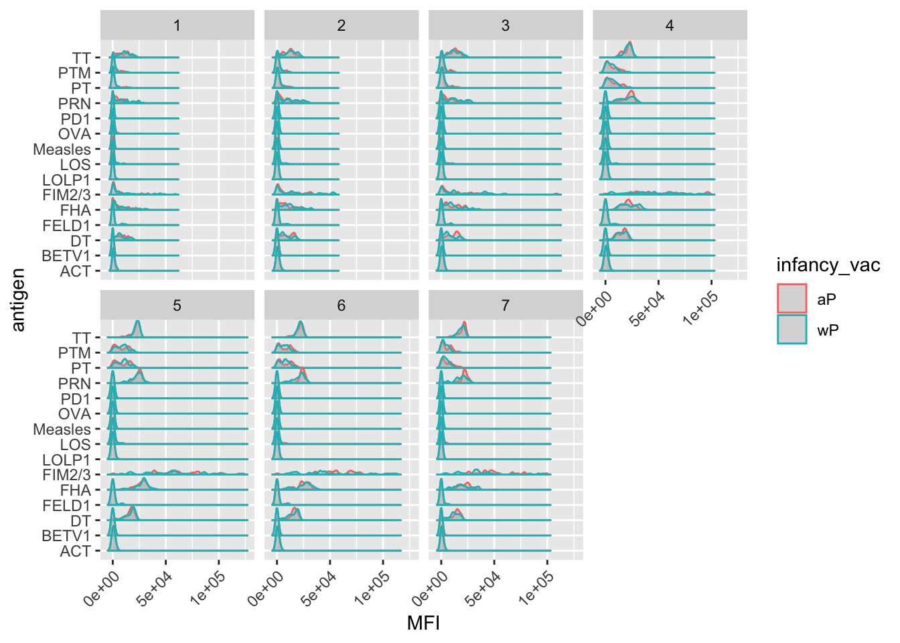
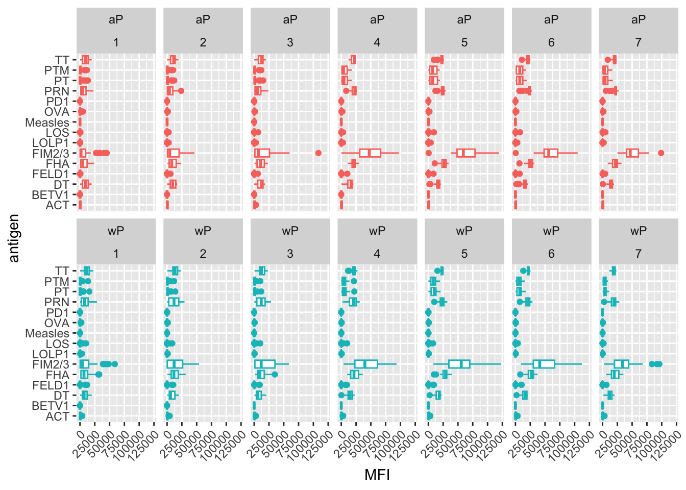
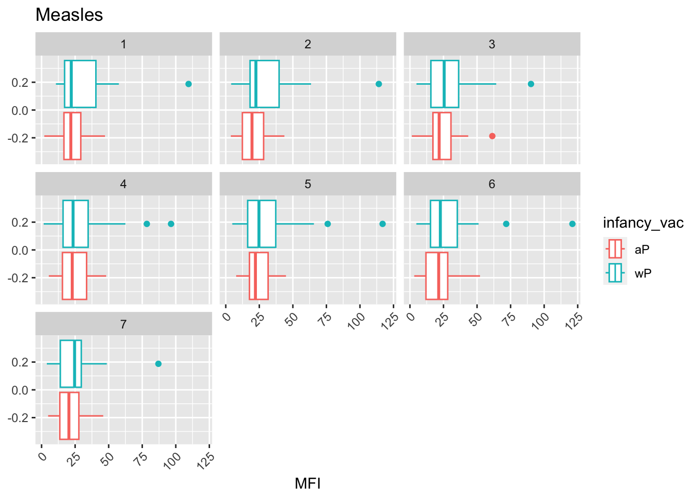
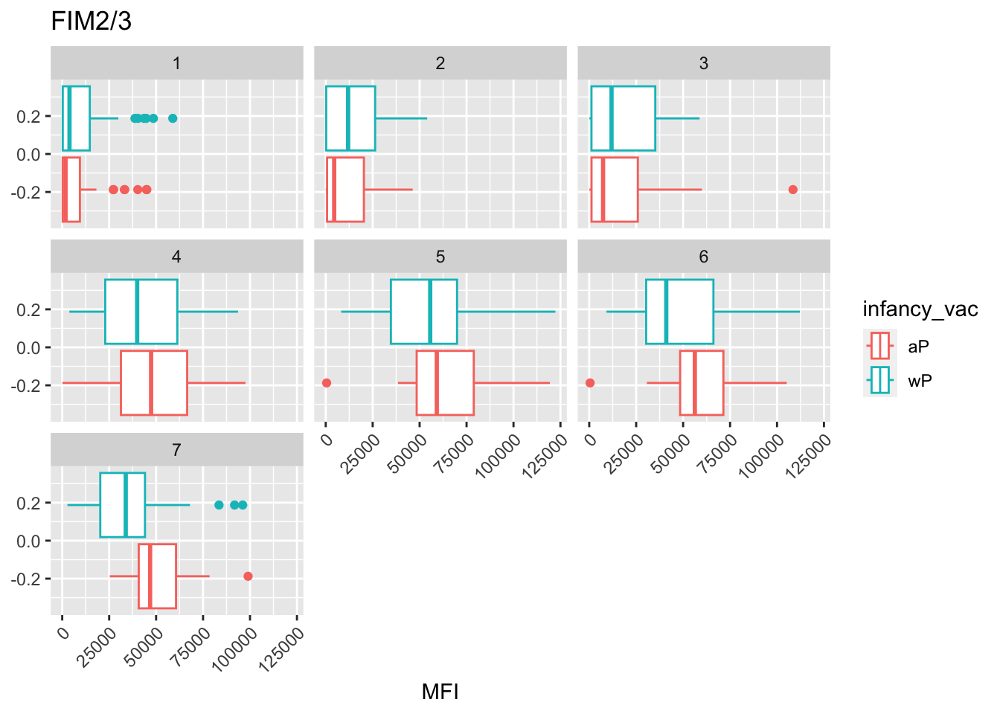
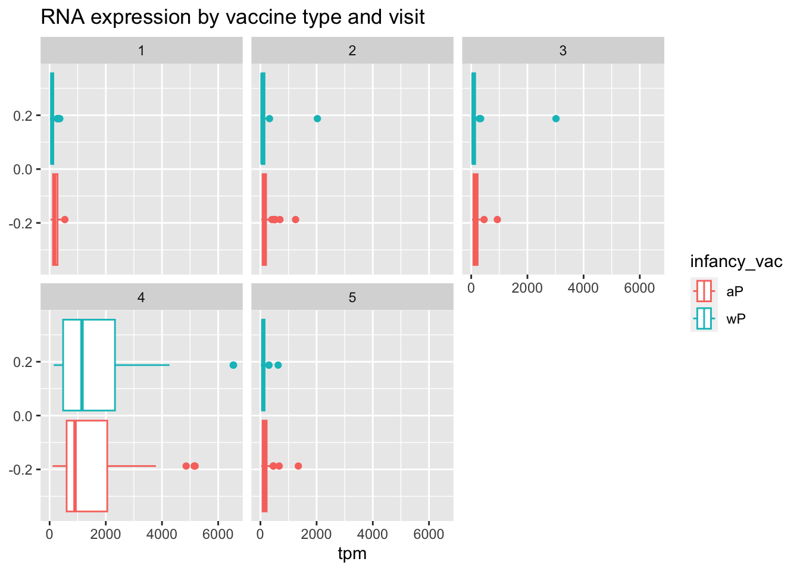
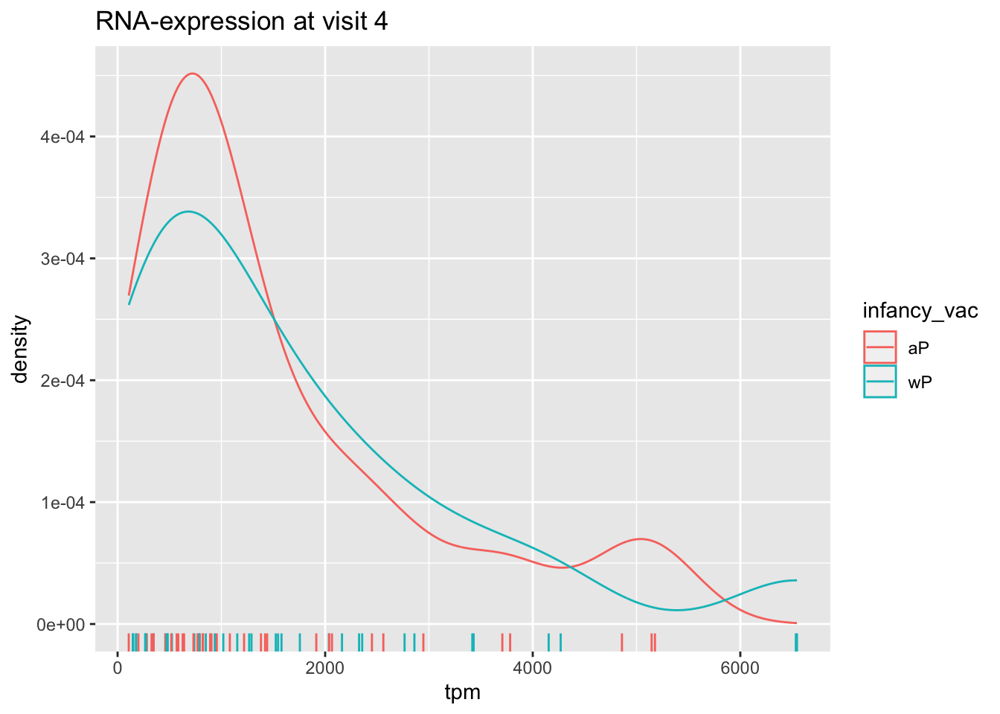

Pertussis resurgence mini-project
Web scraping
I will extract the Pertussis epi data from the CDC’s table using the datapasta package.
- https://www.cdc.gov/pertussis/surv-reporting/cases-by-year.html
Let’s make a plot of the number of cases per year
library(ggplot2)p <- ggplot(cdc) +
aes(x=year,
y=cases) +
geom_line() +
geom_point() +
labs(x="Year",
y="Cases per year",
title="US Pertussis cases over the last century (CDC)") +
scale_y_continuous(labels=scales::label_comma()) +
theme_minimal()The first Pertussis vaccine (whole-Pertussis, “wP”) was introduced in 1946. An updated, antigen vaccine (“aP”) was introduced in 1996, which had fewer side-effects than the wP vaccine. Let’s add colored lines on the plots to indicate the introductions of these vaccines.
p + geom_vline(xintercept = 1946, color="red") + # intro of wP vax
geom_vline(xintercept = 1996, color="blue") + # intro of aP vax
annotate("text", x=1947, y=190000, label="wP introduction", size=4, hjust=0, color="red") +
annotate("text", x=1997, y=70000, label="aP introduction", size=4, hjust=0, color="blue")
Why is this vaccine-preventable disease on the upswing? To answer this questions, we need information about the immunological mechanisms for responses to the wP and aP vaccines. Luckily, the CMI-PB project collects exactly these data from participants longitudinally to answer this question.
Exploring the CMI-PB data
We will use the jsonlite package to download CMI-PB data from their API.
library(jsonlite)
subject <- read_json("https://www.cmi-pb.org/api/subject", simplifyVector = T)
head(subject) subject_id infancy_vac biological_sex ethnicity race
1 1 wP Female Not Hispanic or Latino White
2 2 wP Female Not Hispanic or Latino White
3 3 wP Female Unknown White
4 4 wP Male Not Hispanic or Latino Asian
5 5 wP Male Not Hispanic or Latino Asian
6 6 wP Female Not Hispanic or Latino White
year_of_birth date_of_boost dataset
1 1986-01-01 2016-09-12 2020_dataset
2 1968-01-01 2019-01-28 2020_dataset
3 1983-01-01 2016-10-10 2020_dataset
4 1988-01-01 2016-08-29 2020_dataset
5 1991-01-01 2016-08-29 2020_dataset
6 1988-01-01 2016-10-10 2020_datasetQ4. How many wP and aP subjects are there?
table(subject$infancy_vac)
aP wP
47 49 Q5. How many males and females are in the dataset?
table(subject$biological_sex)
Female Male
66 30 Q6. What is the breakdown of race and biological sex (e.g. number of Asian females, White males etc…)
table(subject$biological_sex, subject$race)
American Indian/Alaska Native Asian Black or African American
Female 0 18 2
Male 1 9 0
More Than One Race Native Hawaiian or Other Pacific Islander
Female 8 1
Male 2 1
Unknown or Not Reported White
Female 10 27
Male 4 13Read in the specimen table
specimen <- read_json("http://cmi-pb.org/api/specimen", simplifyVector = T)
head(specimen) specimen_id subject_id actual_day_relative_to_boost
1 1 1 -3
2 2 1 736
3 3 1 1
4 4 1 3
5 5 1 7
6 6 1 11
planned_day_relative_to_boost specimen_type visit
1 0 Blood 1
2 736 Blood 10
3 1 Blood 2
4 3 Blood 3
5 7 Blood 4
6 14 Blood 5To know whether a given specimen_id comes from an aP or wP individual we need to link (a.k.a. “join” or merge) our specimen and subject data frames. The excellent dplyr package (that we have used previously) has a family of join() functions that can help us with this common task:
Q9. Complete the code to join
specimenandsubjecttables to make a new merged data frame containing all specimen records along with their associated subject details:
library(dplyr)meta <- inner_join(specimen, subject)Joining with `by = join_by(subject_id)`dim(meta)[1] 729 13head(meta) specimen_id subject_id actual_day_relative_to_boost
1 1 1 -3
2 2 1 736
3 3 1 1
4 4 1 3
5 5 1 7
6 6 1 11
planned_day_relative_to_boost specimen_type visit infancy_vac biological_sex
1 0 Blood 1 wP Female
2 736 Blood 10 wP Female
3 1 Blood 2 wP Female
4 3 Blood 3 wP Female
5 7 Blood 4 wP Female
6 14 Blood 5 wP Female
ethnicity race year_of_birth date_of_boost dataset
1 Not Hispanic or Latino White 1986-01-01 2016-09-12 2020_dataset
2 Not Hispanic or Latino White 1986-01-01 2016-09-12 2020_dataset
3 Not Hispanic or Latino White 1986-01-01 2016-09-12 2020_dataset
4 Not Hispanic or Latino White 1986-01-01 2016-09-12 2020_dataset
5 Not Hispanic or Latino White 1986-01-01 2016-09-12 2020_dataset
6 Not Hispanic or Latino White 1986-01-01 2016-09-12 2020_datasetAnalyzing IgG titers
Q10. Now using the same procedure join
metawithtiterdata so we can further analyze this data in terms of time of visit aP/wP, male/female etc
titer <- read_json("http://cmi-pb.org/api/ab_titer", simplifyVector = T)
head(titer) specimen_id isotype is_antigen_specific antigen MFI MFI_normalised
1 1 IgE FALSE Total 1110.21154 2.493425
2 1 IgE FALSE Total 2708.91616 2.493425
3 1 IgG TRUE PT 68.56614 3.736992
4 1 IgG TRUE PRN 332.12718 2.602350
5 1 IgG TRUE FHA 1887.12263 34.050956
6 1 IgE TRUE ACT 0.10000 1.000000
unit lower_limit_of_detection
1 UG/ML 2.096133
2 IU/ML 29.170000
3 IU/ML 0.530000
4 IU/ML 6.205949
5 IU/ML 4.679535
6 IU/ML 2.816431abdata <- inner_join(meta, titer)Joining with `by = join_by(specimen_id)`Warning in inner_join(meta, titer): Each row in `x` is expected to match at most 1 row in `y`.
ℹ Row 1 of `x` matches multiple rows.
ℹ If multiple matches are expected, set `multiple = "all"` to silence this
warning.dim(meta)[1] 729 13head(meta) specimen_id subject_id actual_day_relative_to_boost
1 1 1 -3
2 2 1 736
3 3 1 1
4 4 1 3
5 5 1 7
6 6 1 11
planned_day_relative_to_boost specimen_type visit infancy_vac biological_sex
1 0 Blood 1 wP Female
2 736 Blood 10 wP Female
3 1 Blood 2 wP Female
4 3 Blood 3 wP Female
5 7 Blood 4 wP Female
6 14 Blood 5 wP Female
ethnicity race year_of_birth date_of_boost dataset
1 Not Hispanic or Latino White 1986-01-01 2016-09-12 2020_dataset
2 Not Hispanic or Latino White 1986-01-01 2016-09-12 2020_dataset
3 Not Hispanic or Latino White 1986-01-01 2016-09-12 2020_dataset
4 Not Hispanic or Latino White 1986-01-01 2016-09-12 2020_dataset
5 Not Hispanic or Latino White 1986-01-01 2016-09-12 2020_dataset
6 Not Hispanic or Latino White 1986-01-01 2016-09-12 2020_datasetQ11. How many specimens (i.e. entries in
abdata) do we have for eachisotype?
table(abdata$isotype)
IgE IgG IgG1 IgG2 IgG3 IgG4
6698 1413 6141 6141 6141 6141 Q12. What do you notice about the number of visit 8 specimens compared to other visits?
table(abdata$visit, abdata$isotype)
IgE IgG IgG1 IgG2 IgG3 IgG4
1 986 405 1101 1101 1101 1101
2 986 174 870 870 870 870
3 986 174 870 870 870 870
4 986 174 870 870 870 870
5 986 174 870 870 870 870
6 918 162 810 810 810 810
7 833 147 735 735 735 735
8 17 3 15 15 15 15There are many fewer antibody specimens for visit 8.
Q. How many different antigens are there?
length(unique(abdata$antigen))[1] 16table(abdata$antigen)
ACT BETV1 DT FELD1 FHA FIM2/3 LOLP1 LOS Measles OVA
1970 1970 2135 1970 2529 2135 1970 1970 1970 2135
PD1 PRN PT PTM Total TT
1970 2529 2529 1970 788 2135 Q13. Make a summary boxplot of Ab titer levels (MFI) for all antigens
ig1 <- abdata %>% filter(isotype == "IgG1", visit!=8)
head(ig1) specimen_id subject_id actual_day_relative_to_boost
1 1 1 -3
2 1 1 -3
3 1 1 -3
4 1 1 -3
5 1 1 -3
6 1 1 -3
planned_day_relative_to_boost specimen_type visit infancy_vac biological_sex
1 0 Blood 1 wP Female
2 0 Blood 1 wP Female
3 0 Blood 1 wP Female
4 0 Blood 1 wP Female
5 0 Blood 1 wP Female
6 0 Blood 1 wP Female
ethnicity race year_of_birth date_of_boost dataset isotype
1 Not Hispanic or Latino White 1986-01-01 2016-09-12 2020_dataset IgG1
2 Not Hispanic or Latino White 1986-01-01 2016-09-12 2020_dataset IgG1
3 Not Hispanic or Latino White 1986-01-01 2016-09-12 2020_dataset IgG1
4 Not Hispanic or Latino White 1986-01-01 2016-09-12 2020_dataset IgG1
5 Not Hispanic or Latino White 1986-01-01 2016-09-12 2020_dataset IgG1
6 Not Hispanic or Latino White 1986-01-01 2016-09-12 2020_dataset IgG1
is_antigen_specific antigen MFI MFI_normalised unit
1 TRUE ACT 274.355068 0.6928058 IU/ML
2 TRUE LOS 10.974026 2.1645083 IU/ML
3 TRUE FELD1 1.448796 0.8080941 IU/ML
4 TRUE BETV1 0.100000 1.0000000 IU/ML
5 TRUE LOLP1 0.100000 1.0000000 IU/ML
6 TRUE Measles 36.277417 1.6638332 IU/ML
lower_limit_of_detection
1 3.848750
2 4.357917
3 2.699944
4 1.734784
5 2.550606
6 4.438966library(ggridges)ggplot(ig1) +
aes(MFI, antigen) +
geom_boxplot(alpha=0.4) +
facet_wrap(vars(visit), nrow=2) +
theme(
axis.text.x = element_text(angle=45, hjust=1)
)
Q14. What antigens show differences in the level of IgG1 antibody titers recognizing them over time? Why these and not others?
The biggest responders are FIM2/3 and FHA, for the most part. PRN may have some changes in reponse, but it could also very easily be classified as noise.
ggplot(ig1) +
aes(MFI, antigen, col=infancy_vac) +
geom_density_ridges2(alpha=0.4) +
facet_wrap(vars(visit), nrow=2) +
theme(
axis.text.x = element_text(angle=45, hjust=1)
)Picking joint bandwidth of 1050Picking joint bandwidth of 1400Picking joint bandwidth of 1480Picking joint bandwidth of 1740Picking joint bandwidth of 1610Picking joint bandwidth of 1510Picking joint bandwidth of 1350
ggplot(ig1) +
aes(MFI, antigen, col=infancy_vac ) +
geom_boxplot(show.legend = FALSE) +
facet_wrap(vars(infancy_vac, visit), nrow=2) +
theme(
axis.text.x = element_text(angle=45, hjust=1)
)
Doesn’t seem to be a dramatic difference in humoral response by vaccine type… there must be something else explaining our phenomenon!
Q15. Filter to pull out only two specific antigens for analysis and create a boxplot for each. You can chose any you like. Below I picked a “control” antigen (“Measles”, that is not in our vaccines) and a clear antigen of interest (“FIM2/3”, extra-cellular fimbriae proteins from B. pertussis that participate in substrate attachment
filter(ig1, antigen=="Measles") %>%
ggplot() +
aes(MFI, col=infancy_vac) +
geom_boxplot(show.legend = T) +
facet_wrap(vars(visit)) +
theme(
axis.text.x = element_text(angle=45, hjust=1)
) +
labs(title="Measles")
filter(ig1, antigen=="FIM2/3") %>%
ggplot() +
aes(MFI, col=infancy_vac) +
geom_boxplot(show.legend = T) +
facet_wrap(vars(visit)) +
theme(
axis.text.x = element_text(angle=45, hjust=1)
) +
labs(title="FIM2/3")
Obtaining CMI-PB RNASeq data
url <- "https://www.cmi-pb.org/api/v2/rnaseq?versioned_ensembl_gene_id=eq.ENSG00000211896.7"
rna <- read_json(url, simplifyVector = T)
head(rna) versioned_ensembl_gene_id specimen_id raw_count tpm
1 ENSG00000211896.7 344 18613 929.640
2 ENSG00000211896.7 243 2011 112.584
3 ENSG00000211896.7 261 2161 124.759
4 ENSG00000211896.7 282 2428 138.292
5 ENSG00000211896.7 345 51963 2946.136
6 ENSG00000211896.7 244 49652 2356.749Let’s join the RNA-seq data to our metadata
ssrna <- inner_join(rna, meta)Joining with `by = join_by(specimen_id)`head(ssrna) versioned_ensembl_gene_id specimen_id raw_count tpm subject_id
1 ENSG00000211896.7 344 18613 929.640 44
2 ENSG00000211896.7 243 2011 112.584 31
3 ENSG00000211896.7 261 2161 124.759 33
4 ENSG00000211896.7 282 2428 138.292 36
5 ENSG00000211896.7 345 51963 2946.136 44
6 ENSG00000211896.7 244 49652 2356.749 31
actual_day_relative_to_boost planned_day_relative_to_boost specimen_type
1 3 3 Blood
2 3 3 Blood
3 15 14 Blood
4 1 1 Blood
5 7 7 Blood
6 7 7 Blood
visit infancy_vac biological_sex ethnicity race
1 3 aP Female Hispanic or Latino More Than One Race
2 3 wP Female Not Hispanic or Latino Asian
3 5 wP Male Hispanic or Latino More Than One Race
4 2 aP Female Hispanic or Latino White
5 4 aP Female Hispanic or Latino More Than One Race
6 4 wP Female Not Hispanic or Latino Asian
year_of_birth date_of_boost dataset
1 1998-01-01 2016-11-07 2020_dataset
2 1989-01-01 2016-09-26 2020_dataset
3 1990-01-01 2016-10-10 2020_dataset
4 1997-01-01 2016-10-24 2020_dataset
5 1998-01-01 2016-11-07 2020_dataset
6 1989-01-01 2016-09-26 2020_datasetQ18. Make a plot of the time course of gene expression for IGHG1 gene (i.e. a plot of visit vs. tpm
ggplot(ssrna) +
aes(visit, tpm, group=subject_id) +
geom_point() +
geom_line(alpha=0.2)
Q19. What do you notice about the expression of this gene?
Expression peaks for one visit and seems to fall back to normal.
Q20. Does this pattern in time match the trend of antibody titer data? If not, why not?
It precedes the rise in IgG1 titer levels. This makes sense, considering you need antibody transcription before protein expression. Pretty remarkable how long the antibodies stick around though!
Let’s look at this by vaccine status.
ggplot(ssrna) +
aes(tpm, col=infancy_vac) +
geom_boxplot() +
facet_wrap(vars(visit)) +
labs(title="RNA expression by vaccine type and visit")
ssrna %>%
filter(visit==4) %>%
ggplot() +
aes(tpm, col=infancy_vac) + geom_density() +
geom_rug() +
labs(title="RNA-expression at visit 4")